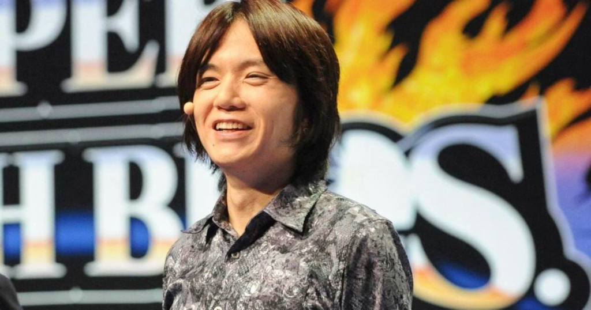

Kirby
Es un personaje ficticio y el protagonista
de la serie de videojuegos Kirby,
diseñado por Masahiro Sakurai en 1992 y
desarrollado por Nintendo y HAL Laboratory.
 Kirby es un pequeño y redondo ser rosa con un rostro sencillo.
Su característica más distintiva es su habilidad para absorber a los enemigos y
copiar sus habilidades,
lo que le permite usar las habilidades que los enemigos tenían antes de ser absorbidos.
Habilidades de Kirby
Kirby es un pequeño y redondo ser rosa con un rostro sencillo.
Su característica más distintiva es su habilidad para absorber a los enemigos y
copiar sus habilidades,
lo que le permite usar las habilidades que los enemigos tenían antes de ser absorbidos.
Habilidades de Kirby
- Copiar: Kirby puede absorber enemigos y copiar sus habilidades.
Esto le permite usar una variedad de poderes,
desde lanzar fuego hasta disparar rayos.
- Vuelo: Kirby puede flotar en el aire,
lo que le permite sortear obstáculos
y planear sobre peligros.
- Transformación: En algunos juegos, Kirby puede transformarse
en diferentes formas que le otorgan habilidades especiales.
- Kirby's Dream Land (1992): El primer juego de Kirby, lanzado para Game Boy.
- Kirby Super Star (1996): Un juego para Super Nintendo que introdujo el concepto de "copiar" habilidades.
- Kirby’s Epic Yarn (2010): Un juego para Wii con un estilo visual único basado en tejido.
- Kirby and the Forgotten Land (2022): Un juego para Nintendo Switch que es la primera incursión de Kirby en el género de mundo abierto en 3D.
El creador de Kirby es
